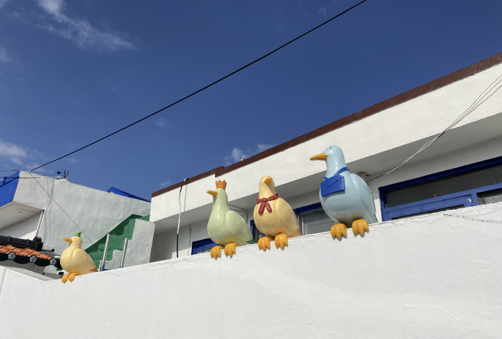
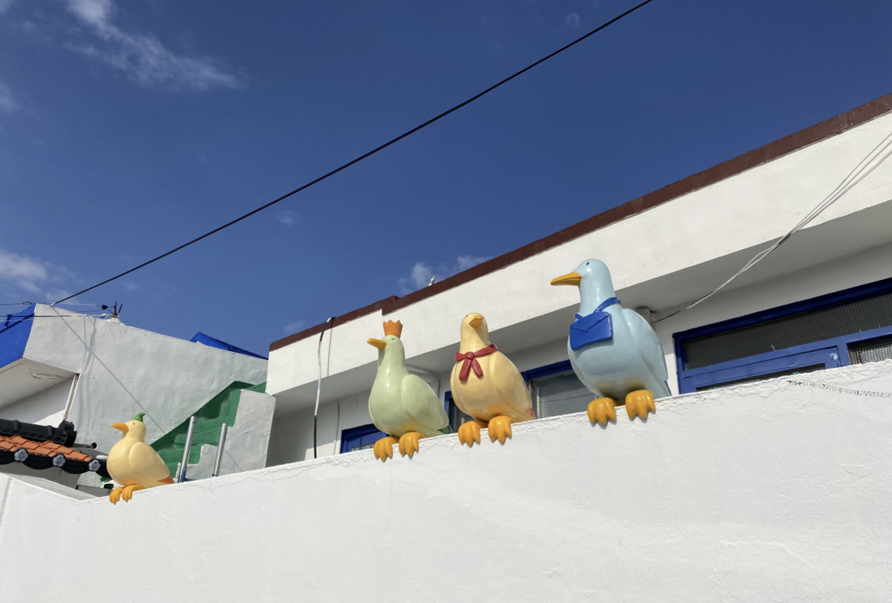
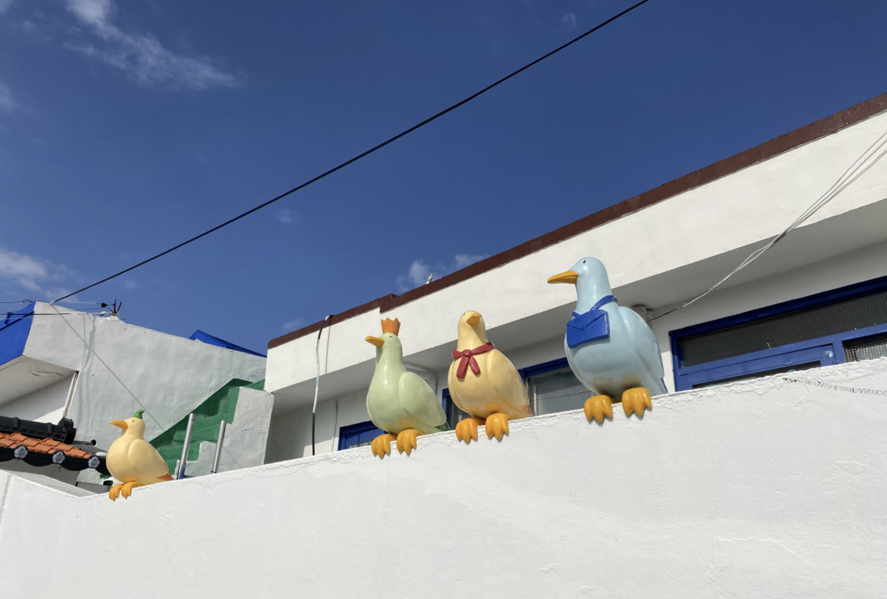
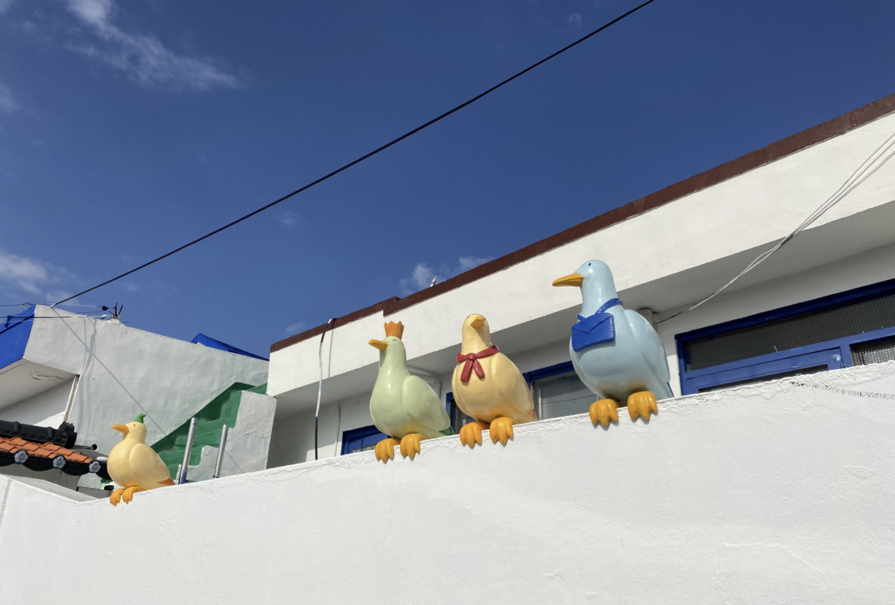

통영지속가능발전교육재단(통영RCE)은 "9월 한 달간 '제6회 동피랑
벽화축제'를 진행한다"고 5일 밝혔다. 축제 주제는 '다 같이(多 가치)
동피랑'. 동피랑 주민은 물론 통영시민과 대한민국 모든 국민이 참여하는
축제다.
동피랑 벽화는 모두 102점인데, 이 중 88점을 지우고 새로
그린다. 나머지 14점은 보수작업만 한다. 벽화 그리기에는 초대작가 9개 팀과
전국 공모를 통해 선정한 전문가와 비전문가 74개 팀이 함께한다. 전문가
그룹이 주로 큰 그림을 맡는다.